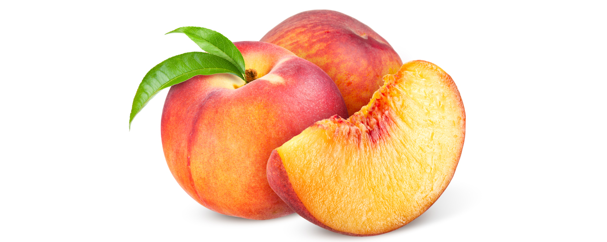

there are a lot of variations of peaches:like japanese, sour types, sweet types and other
peaches are juicy fruits, it can be used in many recepies like:pies, juices, soft drinks, meals, and else.
peaches are very good for health, they have a lot of vitamins and a lot of natural sugar which is needed for our brains
